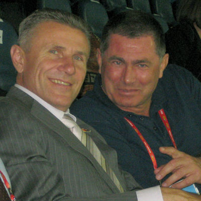

Hotel Riu Pravetz welcomes the guests of Balkan Gala '2011

1 December 2011 - First Balkan Athletics Gala - Pravetz'2011
 The first awarded in the history of Balkan Athletics athletes are: Ivet LALOVA (BUL) and Fatih AVAN (TUR).
The Balkans Rising Stars in athletics are: Bianca PERIE (ROU) and Mihail DUDAS (SRB).
--> Gallery
The first awarded in the history of Balkan Athletics athletes are: Ivet LALOVA (BUL) and Fatih AVAN (TUR).
The Balkans Rising Stars in athletics are: Bianca PERIE (ROU) and Mihail DUDAS (SRB).
--> Gallery
1 December 2011 - ABAF Congress
 --> Gallery
--> Gallery
1 December 2011 - New Athletics Stadium in Pravetz
 --> Gallery
--> Gallery
30 November 2011 - Gala 2011 Press Conference
 A press conference was held today in Pravets, specifically called for signing of a Partnership Agreement between the Association of the Balkan Athletic Federations (ABAF) and the Gulf Cooperation Countries (GCC).
The presidents of the two organisations Dobromir Karamarinov and Ahmad Al Kamali have put their signatures on the Agreement today in hotel RIU Pravets Resort in the presence of Sergei Bubka.
A press conference was held today in Pravets, specifically called for signing of a Partnership Agreement between the Association of the Balkan Athletic Federations (ABAF) and the Gulf Cooperation Countries (GCC).
The presidents of the two organisations Dobromir Karamarinov and Ahmad Al Kamali have put their signatures on the Agreement today in hotel RIU Pravets Resort in the presence of Sergei Bubka.
 --> Gallery
--> Gallery
29 November 2011 - Sergei Bubka came to Pravetz

28 November 2011 - Balkan Athletics Gala 2011 Official Press Conference


 A press conference was held today in Sofia to promote the Balkan Athletics Gala. Mr.Dobromir Karamarinov - President of the Association of the Balkan Athletics Federations has given an outfit for athletics training to newly elected Mayor of Pravetz Mr. Rumen Guninski, as a symbol of his involvment with Balkan Athletics.
A press conference was held today in Sofia to promote the Balkan Athletics Gala. Mr.Dobromir Karamarinov - President of the Association of the Balkan Athletics Federations has given an outfit for athletics training to newly elected Mayor of Pravetz Mr. Rumen Guninski, as a symbol of his involvment with Balkan Athletics.
 Special Plaques of Appreciation was presented to the partners FiBank, Master Card and Eurohol, whose contribution was essential for the starting of the Balkan Athletics Gala.
Special Plaques of Appreciation was presented to the partners FiBank, Master Card and Eurohol, whose contribution was essential for the starting of the Balkan Athletics Gala.


Sergei Bubka is coming to Pravetz for the Balkan Gala
 IAAF Vice President Sergei Bubka (UKR) is going to visit Bulgaria as special guest for the First Balkan Athletics Gala. The Gala is organised by the Association of the Balkan Athletics Federations (ABAF) and will take place in hotel “RIU Pravets Golf and Spa Resort” on 1 December 2011. Representatives of the 10 ABAF member federations will attend the ceremony as well as the Balkan Athletes of the Year (one male and one female) who will be awarded with special prizes. Aside from his leading position in the IAAF, Sergei Bubka is member of the International Olympic Committee (IOC), in his sports career he has won many times World and Olympic gold medals and he is the reigning world record holder in pole vault. The IAAF will be represented at the Gala in Pravets also by Ahmed Al Kamali (UAE), newly elected IAAF Council Member and President of the Athletic Federation of the United Arab Emirates. The visit to Bulgaria of Bubka and Al Kamali was negotiated during IAAF Congress in Daegu by the President of Bulgarian Athletic Federation Dobromir Karamarinov. Bubka and Al Kamali confirmed today their attendance to the ceremony in Pravets. IAAF guests and their colleagues from the ABAF will arrive to Bulgaria on 30 November 2011. Before the Gala they will visit the newly rebuild Stadium in Pravets, which should be entirely reconstructed by 1 December 2011 in order to meet all IAAF certification requirements. “The visit of Bubka and Al Kamali to Bulgaria is just another IAAF recognition for the work of the Balkan Association” said Dobromir Karamarinov, ABAF President. “There is a tendency in our sport to increase the role of the Area Associations - we all saw in Daegu what the concurrence is at world championships. The young athletes should grow up and develop in a suitable concurrence for their age. We are good friends with Bubka and Al Kamali but we also have close partnership and professional relations with them.The First Balkan Gala will take place on 1 December 2011
in the city of Pravets, Bulgaria (50 km North-East from Sofia). It will be a special ceremony to award the Balkan Athletes of the Year (one male and one female athlete), selected by open voting. The aim of the Balkan Gala is to attract more attention from media and spectators to our sport and to motivate the best Balkan athletes to participate in Balkan Championships. The Ceremony shall be held in elegant atmosphere with VIP guests and large media coverage. Along with the Gala, the
entirely reconstructed athletics Stadium in Pravets shall be officially presented.
Additional information about the nominations and voting procedure shall be available soon.
It will be a special ceremony to award the Balkan Athletes of the Year (one male and one female athlete), selected by open voting. The aim of the Balkan Gala is to attract more attention from media and spectators to our sport and to motivate the best Balkan athletes to participate in Balkan Championships. The Ceremony shall be held in elegant atmosphere with VIP guests and large media coverage. Along with the Gala, the
entirely reconstructed athletics Stadium in Pravets shall be officially presented.
Additional information about the nominations and voting procedure shall be available soon.
Head Office:
75, Vassil Levski Blvd., 1040 Sofia, Bulgaria
phones: (+359 2) 9885462; (+359 2) 9300669
fax: (+359 2) 9880714
headoffice@balkan-athletics.eu